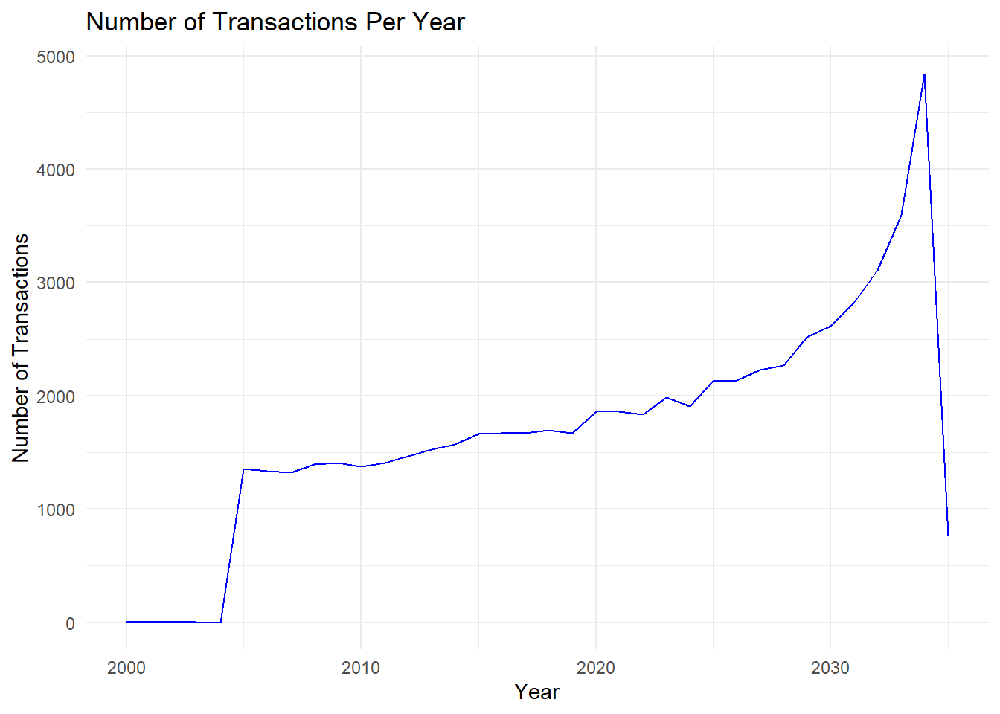
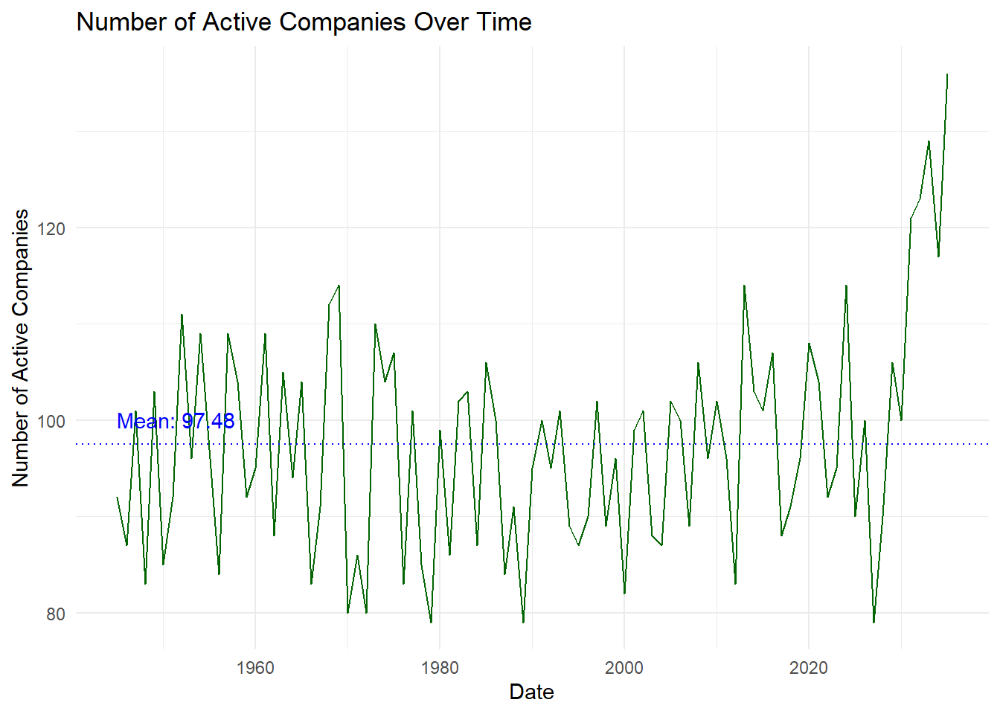
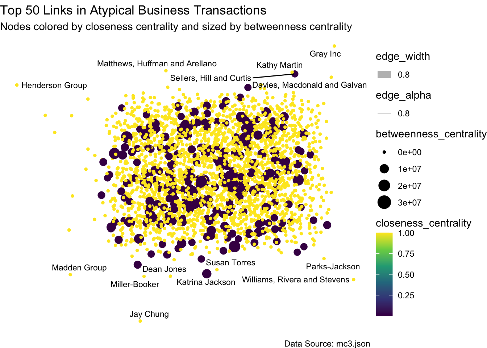
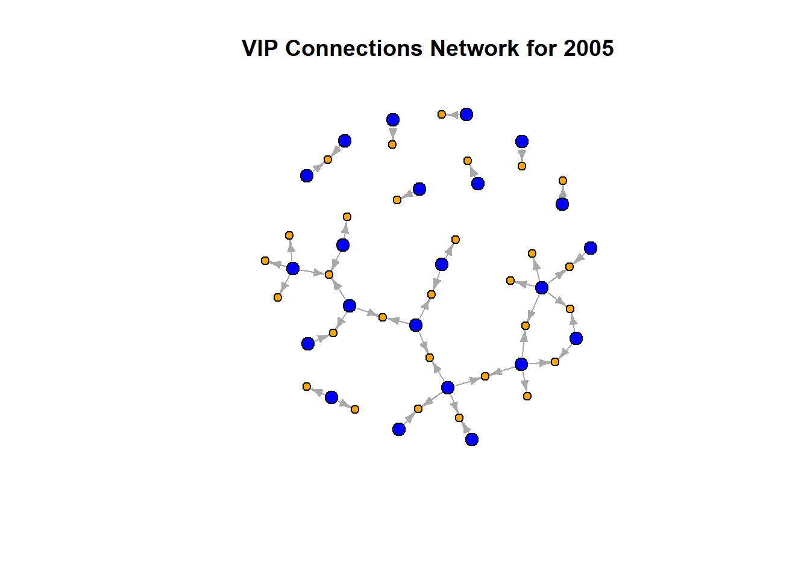
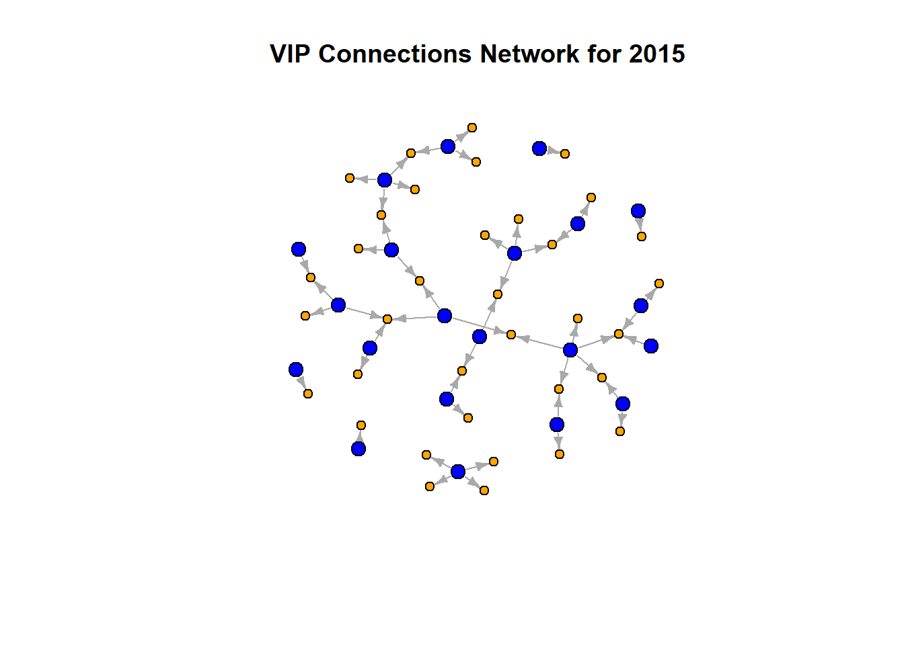
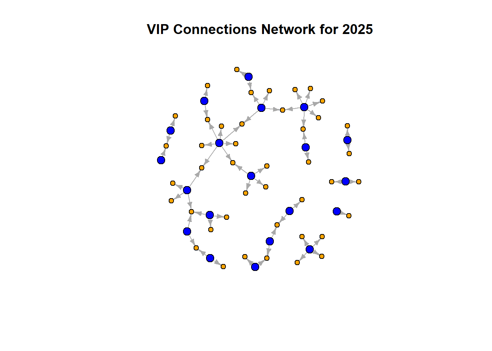
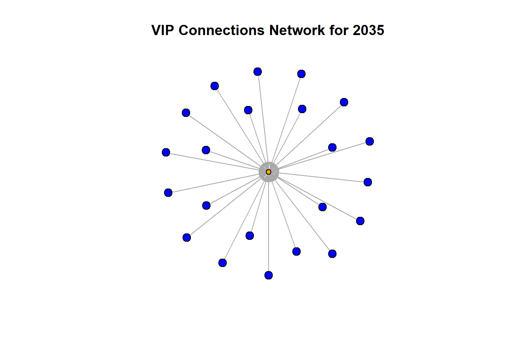
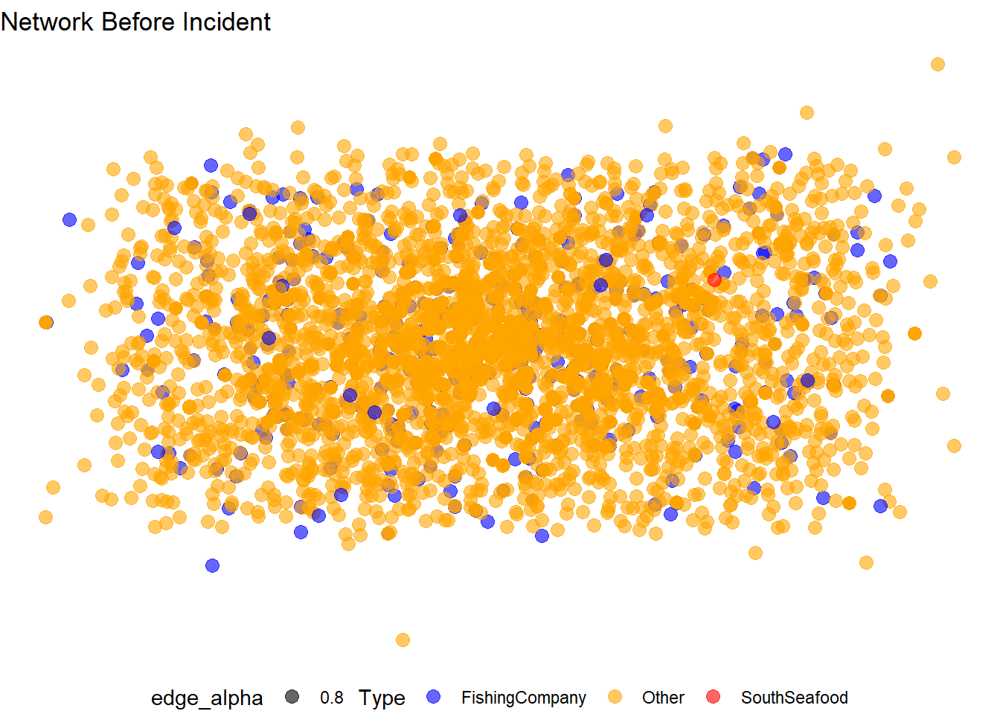
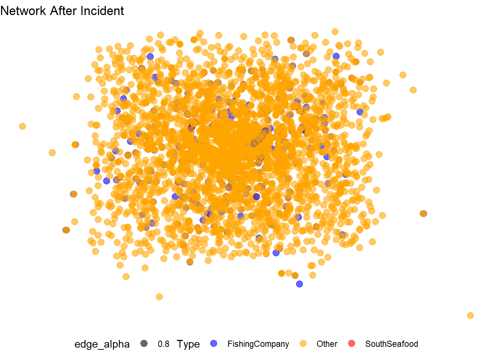
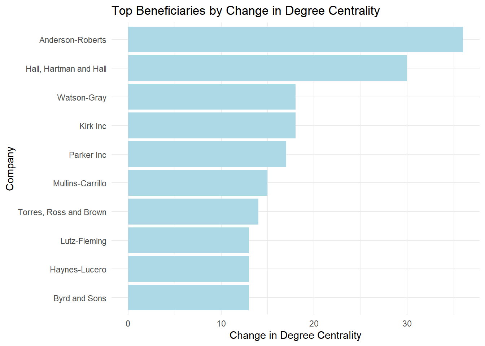

FishEye International is a company dedicated to monitoring and preserving marine ecosystems by tracking commercial fishing activities. In recent times, the commercial fishing community in Oceanus has been disrupted by illegal fishing activities, most notably by SouthSeafood Express Corp. This has highlighted the need for FishEye to enhance its monitoring capabilities. To prevent illegal fishing and better understand the impacts of these activities, FishEye requires advanced visualization tools to analyze and interpret complex business relationships and changes in corporate structures over time.
Project objective
Develop a visual analytics approach to help FishEye International analysts visualize and understand temporal patterns and changes in corporate structures to identify and prevent illegal fishing.
Tasks:
temporal patterns and changes in corporate structures.
Identify and display examples of atypical business transactions, inferring motivations behind changes in activity.
Examine how the influence of a company changes over time, identifying ownership or influence within a network.
Visualize the network associated with SouthSeafood Express Corp and analyze how this network and competing businesses change due to their illegal fishing behavior.
flowchart LR A[Preprocessing] --> |Loading required libraries| B[Data Wrangling] A --> |Loading libraries| B[Data Wrangling] A --> |Renaming Columns| B[Data Wrangling] A --> |Standardizing Date Time Formats| B[Data Wrangling] A --> |Splitting Words| B[Data Wrangling] A --> |Loading Data| B[Data Wrangling] B[Data Wrangling] --> |Handling Missing Values| C[Load Data] B --> |Setting empty values in revenue to 0| C[Load Data] B --> |Extracting Nodes| C[Load Data] B --> |Extracting Links| C[Load Data] C[Load Data] --> D[Analysis] D[Analysis] --> D1[Q1: temporal changes in corporate structures] D[Analysis] --> D3[Q2: atypical business transactions] D[Analysis] --> D4[Q3: changes in ownership] D[Analysis] --> D5[Q4: changes after illegal incident]
flowchart LR
A[Preprocessing] --> |Loading required libraries| B[Data Wrangling]
A --> |Loading libraries| B[Data Wrangling]
A --> |Renaming Columns| B[Data Wrangling]
A --> |Standardizing Date Time Formats| B[Data Wrangling]
A --> |Splitting Words| B[Data Wrangling]
A --> |Loading Data| B[Data Wrangling]
B[Data Wrangling] --> |Handling Missing Values| C[Load Data]
B --> |Setting empty values in revenue to 0| C[Load Data]
B --> |Extracting Nodes| C[Load Data]
B --> |Extracting Links| C[Load Data]
C[Load Data] --> D[Analysis]
D[Analysis] --> D1[Q1: temporal changes in corporate structures]
D[Analysis] --> D3[Q2: atypical business transactions]
D[Analysis] --> D4[Q3: changes in ownership]
D[Analysis] --> D5[Q4: changes after illegal incident]
Analysis
Q1 Methodology
The lack of time-series data for each node making it difficult to directly compare changes in corporate structures for the same company over time. Therefore, we simplify our approach by assuming that a company’s structure is proportional to its transaction volume. By grouping transaction data by start date and counting the number of transactions for each period, we can illustrate changes in corporate structures over time. This method allows us to visualize temporal patterns and infer structural changes based on transaction activity.
To focus on the most relevant period, we filter the data to only keep transactions from 2000 (five years before 2005) to 2035 (the end of the dataset). This allows us to capture recent changes to entities while excluding older, less relevant data.
Another way to observe changes in corporate structures over time is to visualize the changes in the most active people and businesses. By identifying and tracking these key entities, we can gain insights into how their influence and activities shape the overall corporate structure during different periods. This method complements the transaction volume analysis, providing a more comprehensive view of temporal patterns and structural changes.
Q1 Visualization

Fig 1

Fig 2
Q1 Key findings
In Figure 1, we observe that the rapid growth in transactions began around 2005, peaking in 2034, followed by a sharp decline in 2035. Figure 2 further illustrates these trends by showing fluctuations in the number of active companies over time. Despite these fluctuations, there is a general upward trend in the number of active companies, particularly from 2010 onwards, where the numbers reach their highest values in the dataset. This pattern mirrors the transaction volume trends observed in Figure 1. Additionally, we notice a dip in the number of active companies around 2035, followed by an increase. This suggests that a significant event may have occurred around 2035, leading to market restructuring.
Q2 Methodology
To address the task of identifying and displaying examples of typical and atypical business transactions, we focused on nodes and edges that signify ownership and employment relationships.
Step 1: Filtering for Relevant Edges
We began by filtering the dataset to retain only the edges representing “Event.Owns.Shareholdership,” “Event.WorksFor,” and “Event.Owns.BeneficialOwnership.” These types of edges are crucial for understanding the ownership and employment structures within the corporate network.
Step 2: Identifying Suspicious Nodes
Next, we aimed to identify atypical transactions by leveraging centrality measures. Centrality is a critical metric in network analysis that indicates the importance or influence of a node within the network. We calculated centrality scores for all nodes and then filtered out those below a certain centrality threshold to eliminate false positives.
Step 3: Highlighting Suspicious Nodes
By applying the centrality threshold, we identified the top 50 suspicious nodes. These nodes, which exhibit unusually high centrality, are indicative of atypical transactions. Their elevated centrality scores suggest that they play a disproportionately influential role in the network, potentially pointing to suspicious or anomalous behavior.
Through this method, we can highlight nodes that warrant further investigation and provide insights into the underlying motivations for changes in activity. This analysis helps us identify patterns of influence and ownership that deviate from typical business transactions, thereby uncovering potentially illicit activities within the corporate network.
Q2 Visualization

Fig3
Q2 Key findings
Youting: can you extract all the 50 transactions list? so that i can put here
Q3 Methodology
To address the question of examining how the influence of a company changes over time and identifying ownership or influence within a network, we focused on tracking changes in the most influential individuals (VIPs) and their networks. Here is a summary of our approach:
Step 1: Splitting Nodes and Filtering Edges
First, we split the nodes into two categories: people and companies. We then filtered the dataset to retain only ownership-related edges, such as those representing shareholdership, beneficial ownership, and employment relationships. This step ensures that we focus on the connections that are relevant to understanding influence within the network.
Step 2: Identifying Most Influential Individuals (VIPs)
Next, we determined the most influential individuals by setting a threshold for the number of ownership connections. Individuals who exceed this threshold are considered VIPs, as their numerous ownership connections suggest a higher level of influence within the network.
number of ownership connections
count
percentage
92
4
0.00774
91
18
0.0349
29
1
0.00194
18
2
0.00387
15
1
0.00194
13
2
0.00387
12
3
0.00581
11
4
0.00774
<= 10
51594
99.96
Given the significant gap between the top 2 groups and the 3rd, we identified the top 22 individuals (those owning 91 or more companies) as VIPs, as their extensive ownership connections suggest a higher level of influence within the network.
Finally, we filtered the ownership connections to include only those involving these 22 influential individuals (VIPs). By focusing on these connections, we can track how the influence of these key individuals changes over time and how their networks
Q3 Visualization
Given the significant increase in data from 2004 onwards, focusing on every 10 years from 2005 to 2035 would provide a more detailed analysis of changes in ownership and influence.

Fig 4

Fig 5

Fig 6

Fig 7
Q3 Key findings
In 2005, the network is sparse with moderate VIP connections, indicating balanced influence. By 2015, the network is denser, showing increased influence and control among VIPs. In 2025, the network’s complexity peaks, with VIPs owning shares in many companies, indicating heightened market control. By 2035, the network forms a star-like structure, with a central VIP gaining substantial influence and direct connections to numerous companies. This significant power consolidation may be linked to the SouthSeafood incident, triggering the restructuring and concentration of influence.
Q4 Methodology
To visualize and analyze the network associated with SouthSeafood Express Corp and its changes due to illegal fishing behavior,
First, we extracted all nodes and edges linked to SouthSeafood Express Corp and classified all other fishing companies as competitors, with the remaining entities labeled as non-competitors. Then, we identified significant changes of start_date & end_date in connections and network structure resulting from SouthSeafood’s illegal activities and closure. This analysis revealed shifts in influence, with some companies gaining and others losing power, highlighting patterns of power consolidation.
Q4 Visualization


Q4 Key findings
After the incident, the number of blue nodes (fishing companies) decreased significantly, and yellow nodes (non-competitors) also decreased slightly. Despite the reduction in nodes, the network has become denser, indicating increased interconnectedness among the remaining entities.

The results show that the top beneficiaries, all classified as fishing companies, significantly increased their network centrality following SouthSeafood Express Corp’s legal troubles. Anderson-Roberts, Hall, Hartman and Hall, and Kirk Inc., among others, saw the largest gains, suggesting they capitalized on the shift in the network’s structure.
Conclusion
After comparing all the findings from the above four tasks, Susan Torres and the entity “Torres, Ross and Brown” and Cynthia Anderson and the entity Anderson-Roberts are our future key focus subjects because they are involved in atypical transactions, are influential in the network, and are beneficiaries of the SouthSeafood incident. We should closely monitor the future activities of these entities to prevent new illegal fishing activities from emerging.
Future Work
Comparative Analysis of Regional Markets. We can compare the dynamics of VIP connections and market structures across different geographical regions. By identifying common patterns and regional-specific dynamics, we can enhance future analytics and enforcement strategies.